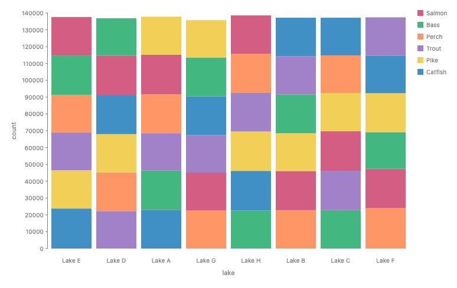
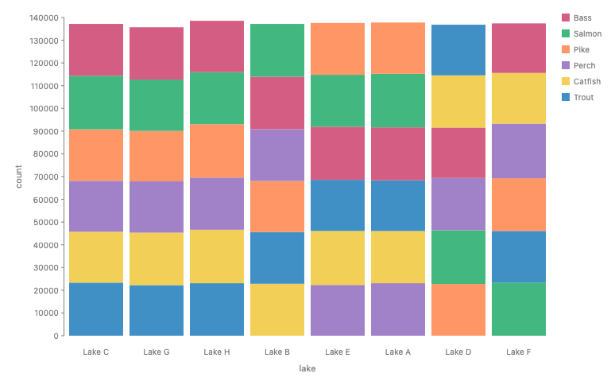
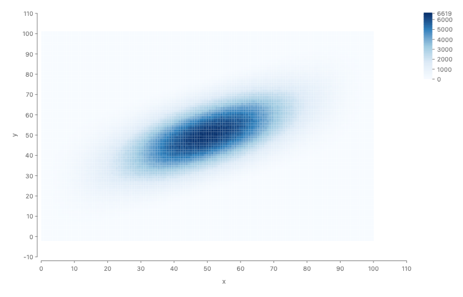
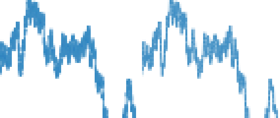
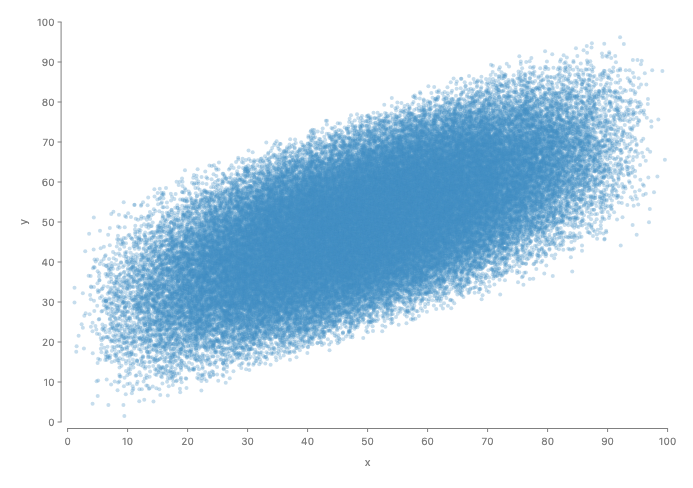
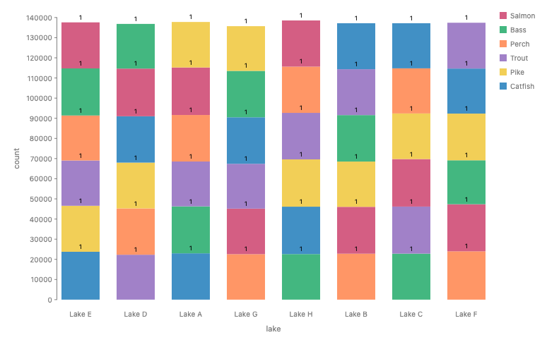
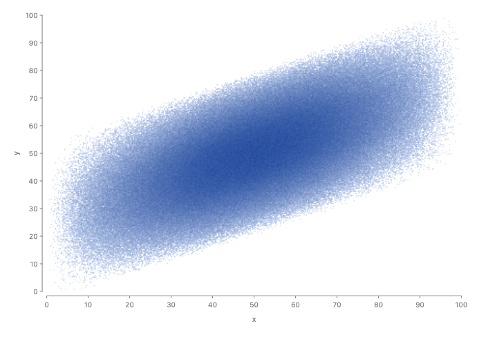

The same data part, as a query that returns 48 rows
SELECT lake, species,
sum(count) AS h,
arg_min(species, rownum) AS fill
FROM catch
GROUP BY lake, species
ORDER BY min(rownum);
Summary. A GoFish spec already says how rows turn
into marks. The by keys say which rows belong together,
and the kind of each channel says how to combine them (sizes sum,
positions average, colors read the first row). So the data part of a
spec is a group-by query whose result has one row per mark. Today the
engine does not use this. It walks row objects, and a stacked bar over
a million rows spends 94% of its time grouping rows that end up as 48
rectangles.
Recommendation. Approach A, "one plan, two places to
run it". The engine turns the data part of every chart into a small
query plan before it runs anything. A column engine inside GoFish runs
the plan by default. When the data lives in a database, the same plan
is sent there as SQL and only the rows for the marks come back. No
operator, mark or option changes its spelling. Mosaic is the piece
that runs the SQL on the JS side, and the user does not have to know
it is there.
What a user sees change. A table in a database is
accepted as chart data (already true in Python, new in JS).
explain() shows the plan. A function stays the escape
hatch: it runs on rows in the host, and it is a loud error when that
would pull too many rows out of a database.
Measurement scripts and raw results are in
tests/tmp/scaling/ (not committed). Terms such as plan,
mark table and relation are defined on the Background tab.
What the measurements say
Charts fall into two groups, and they are slow for different reasons.
All times are from headless Chromium on an M1 Pro, median of 3 runs.
Many rows, few marks
The mark count is fixed by the groups, not the rows. The time goes to
the data part.
Chart
Rows
Today
Data part run on columns, then drawn
Stacked bars, 48 rectangles
1,000,000
311 ms
12 ms
Stacked bars, 48 rectangles
10,000,000
3,447 ms
29 ms
Histogram, 40 bins
1,000,000
196 ms
11 ms
Histogram, 40 bins
10,000,000
1,644 ms
20 ms
Domain inference, layout and paint stay at about 10 ms from a thousand
rows to ten million. At a million rows, grouping takes about half the
time, a scan of every column (used or not) takes 16%, the channel sum
takes 15% and garbage collection takes 15%. GoFish's grouping is about 3
times slower than a plain loop over the same row objects and about 250
times slower than a loop over typed arrays.
One mark per row
There is nothing to aggregate. The time goes to layout and to memory,
and the cost is per node.
Chart
Rows
Today
Scatter
10,000
544 ms
Scatter
100,000
8,048 ms
Scatter
300,000
fails (stack overflow)
Line, one path
100,000
8,006 ms
Line, one path
1,000,000
browser tab crashes
A line draws one path but builds two nodes per point, so it costs the
same as the scatter. A query cannot help these charts by itself, because
the spec asks for one mark per row. They need the column form of marks
agreed in #1009 (the slow 10k-dot scatter) and reduction by pixel.
One more number shapes the design. Loading a million JS row objects into
DuckDB took 505 ms, which is slower than GoFish grouping them itself
(293 ms). A database only pays off when the data is already in it, or
already in columns.
Build order
Approach A, built in this order.
Column engine and the plan. No API change. In-memory
charts with grouping get about 25 times faster at a million rows, and
Arrow from Python is used as columns and no longer turned into row
objects.
Run the plan in the Python kernel. A dataframe or a
relation stays in Python, and the mark table crosses the bridge.
Python scientists are the audience for 1.0, and for them the cost
today is moving the table.
The JS connector on Mosaic.connect,
db.table, explain.
One mark per row. The mark table as the column form
of marks (#1009), then reduction by pixel.
Painters. This is separate work that reads only the
display list. A cheaper SVG painter can merge now. Canvas and WebGL
painters pay off after step 4. See the "Rendering and progressive"
tab.
Why approach A
Reasons, with the rule each one rests on:
It desugars into the core. A plan means exactly what the row walk
means ("if you can desugar it into Core, it must be sound",
principles.md).
It is one mechanism. The column engine replaces the row path, and the
database is a second place to run the same plan, not a second pipeline
(#1009, "one implementation, and the pipeline chooses").
It adds almost no terms, and the three it adds match polars, ibis and
DuckDB (api-design.md, naming precedent order).
The aggregation meaning already lives on channel kinds and column
types ("channels are chosen by how they aggregate",
api-design.md), so the planner reads it and does not
guess.
It is the same in JS and Python, because the plan is made from the
serialized form.
Approach A differs from #335, the earlier attempt to run all transforms
in Python that was dropped. #335 added a second form of the spec that
carried a tree of grouped data, so Python had to know how GoFish groups.
Here JS stays the only engine. It makes the plan and asks the host to
run a plain table query, the same way it asks the host to run a
derive function today.
Approach B is the runner-up. It becomes the better pick if linked
selections across many charts turn out to be the main use, because then
every chart needs a coordinator anyway.
Five examples
The mapping from a spec to a query is direct, because the pieces of the
data part were designed as table operations already. The full mapping
table is below the examples.
source catch
group lake, species from spread.by and stack.by
h = sum(count) rect.h is a size channel
fill = first(species) rect.fill is a color channel
order first appearance
result 48 rows, one per rectangle
The same plan as SQL
SELECT lake, species,
sum(count) AS h,
arg_min(species, rownum) AS fill
FROM catch
GROUP BY lake, species
ORDER BY min(rownum);
The stack offsets and the y axis come from layout over these 48 rows,
as they do today over 48 nodes.
Check
A prototype rendered this chart twice over 100,000 rows, once from the
rows and once from the 48 rows that DuckDB returned for the query. The
two pictures have 0 different pixels and the same SVG geometry.

From the rows, as today.
From the query result. 0 pixels differ.
The same check passed with 0 different pixels for the histogram, the
histogram with a fill, the two-direction heatmap, a grouped mean, and
bars normalized to 100%. DuckDB's avg and the engine's
mean gave the same bits. A planner of 120 lines read the serialized
chart and wrote these queries itself
(tests/tmp/scaling/proto/planner.mjs).
The check also showed which rules the query must keep.
Order by first appearance. Without
ORDER BY min(rownum) the bars, the stack order and the
legend all change (picture below, 140,000 or more different pixels).
That one clause fixes all three.
First row for a color. A color that is not a key
needs arg_min(species, rownum). With
min(species) the colors and the legend change.
Empty cells need nothing. The query returns only
the cells that have rows, and partition rebuilds the
rest from the domain.

The same query without the order rule.
One case did not match, and it shapes the design. For a mean at an
outer level of a nested split, the prototype fed the inner groups'
rows back through the unchanged spec, and the outer level then took a
mean of means (7,603 different pixels). So the plan must compute each
level's channels from the rows, as its own level of the query
(ROLLUP), and hand layout one mark table per level.
Feeding aggregated rows back in as if they were data is not enough.
Where I could be wrong about a function over a database table
Fetch rows, with a limit (chosen)
The function runs on fetched rows. Fetching more rows than the
limit from a relation is an error that names the step and says
what to do.
I did not choose source reading because Python has no equal
path, and the serializable expressions already being designed
(#1192, the Python step 8 prototype, and #736, row-level
computed channel values) cover the same cases in both languages.
Read the source of JS arrow functions (the other choice)
Read the source the way Arquero does, so this could still be
planned:
SELECT floor(x / 2.5) AS cell, count(x) AS h
FROM catch
GROUP BY cell;
The cells come from the domain of x, which is two more
numbers from the database (min(x), max(x)).
A cell with no rows gets no row back and is drawn empty, which is what
partition does today.
SELECT floor(x / 2.5) AS cx, floor(y / 4) AS cy, count(*) AS fill
FROM catch
GROUP BY cx, cy;
The spec for a density is already in the grammar. It is a
partition in two directions with a count on the fill.
Nothing about it is special to large data.
Timing
Over ten million rows the query took 41 ms and returned 627 rows, and
GoFish drew them in 60 ms.
This example is hard for a second reason. A fine grid has thousands of
cells, so the mark count is the limit again even though the data part
is one query.

The same data at 143 by 94 cells.
At 143 by 94 cells the query still took 23 ms, but drawing 13,517
rectangles took 635 ms. The engine can draw a full grid of plain
rectangles as one image, because the mark table for it is a column of
fills on a regular grid. That is a drawing choice inside the engine,
the same kind as the column form of marks in #1009. The "Rendering and
progressive" tab has the numbers.
Where I could be wrong about the JS spelling of a database source
connect() and
db.table("catch") (chosen)
From a gofish-graphics/duckdb subpath that is built
on Mosaic, so the user does not see Mosaic.
import { connect } from "gofish-graphics/duckdb";
const db = await connect(); // DuckDB in the browser, or connect({ url }) for a server
chart(db.table("catch"))
.flow(spread({ by: "lake", dir: "x" }))
.mark(rect({ h: "count" }));
With an existing Mosaic coordinator
A user who already has a Mosaic coordinator passes it in,
connect({ coordinator }), and the chart then shares
its cache and selections with vgplot charts on the page.
There is no by, so the plan has no grouping and the mark
table is the two columns. A query cannot shrink it without changing
what is drawn. Reduction by pixel is the known answer, so the
prototype tested whether it leaves the picture alone. It does not,
quite.
Check
The line
M4 kept 2,313 of 100,000 points. The render went from about 8 seconds
to about 170 ms.

A part of both lines at four times the size, all points on the left
and M4 on the right.
The two pictures differ in 9,568 pixels. Most differ by a small
amount, and 319 differ by half the color range or more. The shape and
every peak are kept. What changes is how dark the soft edge of the
stroke is where the line doubles back on itself many times. Keeping
every k-th point with the same budget is much worse (1,696 pixels
differ by half the range or more, and peaks are lost). From ten
million points, M4 took 39 ms in a typed-array loop or 69 ms in
DuckDB, and the line then drew in 113 ms.
The scatter
Keeping one dot per occupied pixel kept 49,863 of 100,000 dots.
All 100,000 dots at 30% opacity.

One per pixel. Visibly lighter where dots are dense.
Dots
Kept
Different pixels
How different
Solid, one per pixel
49,863
42,031
almost all by less than 3% of the color range
Solid, one per half pixel
80,386
19,720
almost all by less than 3%
30% opacity, one per pixel
49,863
70,465
visibly lighter where dots are dense
So reduction by pixel is close but it is not the same picture, and
with see-through dots it is plainly a different picture. It also only
starts to pay when there are many more rows than pixels. This decides
how it is used.
A line is reduced with M4 when its data is a relation and there
are more points than four per pixel column.
Mosaic does the same by default. explain() says so, and
exact: true on the chart turns it off, which then
fetches every point or hits the row limit.
A scatter is never thinned by the engine. Above the
row limit it is an error that points to the density spec in example
3. Thinning changes what overlapping dots mean, and the density is
the honest picture of ten million points.
In-memory data is never reduced. The column form of
marks draws every row.
Where I could be wrong about a line and a scatter of ten million
rows
Reduce the line, never thin the scatter (chosen)
Reduce a line over a relation by default, because the shape and
the peaks are kept and nothing else can draw it, and never thin
a scatter.
Nothing is reduced unless the user asks (the stricter choice)
selectAll("bars") gives the second chart one item per
named mark. The item is a reference to the drawn bar. The spelling
does not change, and the first chart is planned as in example 1. What
the second chart reads from each item decides what it costs.
Check
The chart above was rendered from 100,000 rows and from the 48 rows of
the query result. The two pictures have 0 different pixels. The
ribbons read three things from each bar, which are its laid-out box,
its species key and its color. All three are in the mark
table or come from layout over it.
What the second chart reads from a named mark
Where it comes from
Checked
Position and size (ribbons, lines, enclose, where
a label sits)
layout over the mark table
0 different pixels for ribbons and labels. Lines and
enclose were read from the code, not run.
A key of the first chart (group({ by: "species" }))
a column of the mark table
0 different pixels
The color of the mark
a column of the mark table
0 different pixels
A sum of the summed column, in a function (sumBy(d[0].datum, "count"))
a column of the mark table, because a sum of sums is the sum
0 different pixels
A count of the mark's rows, in a function
(d[0].datum.length)
the underlying rows
wrong from the mark table
A column the first chart never used, in a function (meanBy(d[0].datum, "x"))
the underlying rows
wrong from the mark table
The last two rows are the hard part. Today a reference's
datum is the mark's rows, and a function in the second
chart can do anything with them. The test gave such a function the
mark table's one row in place of the mark's rows. The label that
counts rows then says "1" where it should say "2158", and nothing
reports an error.
Row count labels from the rows.

The same labels from the mark table.
So the design keeps one rule.
A named mark's datum is always its underlying rows,
never its row of the mark table.
Over in-memory data, datum is a view into the columns
for that group. It is built when a function reads it. The stories
that label bars with sumBy(d[0].datum, "count") keep
working and give the same answer.
Over a database table, a function that takes named marks is handled
like any other function (see "Escape hatches"). The rows of those
marks are fetched for it, and above the row limit this is an error
that names the function.
The way to label bars over a large table without fetching rows is a
channel the planner can read, e.g.
text({ text: field("count").sum() }) in the second
chart. This does not work today. A channel over references reads the
reference object and not the mark's rows, so this spec draws no
labels at all. Making channels read through a reference is a small
change with its own value, and after it the label is one more column
of the first chart's mark table.
Two more facts from reading the code.
A reference points at a real node today. Ribbons,
enclose, resolve and paint order all walk
from the reference to the node and its parents. For charts made of
groups this costs nothing, because the 48 bars are nodes anyway. It
only becomes a question for a named scatter of rows drawn from
columns. What each of these readers needs is a box and the keys,
which a row of a laid-out column has. Until references can point at
such a row, a named scatter keeps a node per point and runs at
today's speed.
The second chart's column domains are computed over the rows the
references reach.
With the rule above this stays true. Over a database table it is one
more small query with the first chart's filter.
How a spec maps to a query
In the spec
In the plan
SQL
by: "lake" on any split (spread,
stack, group, scatter,
treemap, table)
sum(count) / sum(sum(count)) OVER (PARTITION BY lake)
axis and color domains
summary of a column
min, max, DISTINCT
no by (a scatter of rows)
no grouping
SELECT x, y
derive(fn), a function accessor, a mark function
cannot be planned
rows are fetched
Three things stay in GoFish and are never part of a plan. Layout stays
(stack offsets, spread positions, treemap tiles, labels), and it runs on
the mark table. Empty cells of a partition stay, because
the cells come from the column's domain and not from the rows. Unit
checks stay, and they move earlier: a sum over a column that cannot be
summed is an error when the plan is made, before any row is read.
Escape hatches
A function is the escape hatch.derive(fn), a function accessor and a mark function keep
working. Over in-memory data they run on a row view of the columns.
Over a relation they run on fetched rows.
A row limit on fetching. Fetching more rows than the
limit from a relation is an error that names the step and says what to
do. It is never a silent slow chart.
[gofish] derive(fn) at flow step 2 needs every row of "catch"
(10,000,000 rows, limit 100,000). A function cannot run in the database.
Filter first, write the step with field expressions, or raise the limit
with connect({ rowLimit }).
Raw SQL as a source.chart(db.sql("SELECT ... FROM catch WHERE ...")). Mosaic,
dbplyr and ibis all have this.
explain().chart(...).flow(...).mark(...).explain() returns the plan
and, for a relation, the SQL. It also says where rows are fetched and
why.
Getting the scatter and the line fast
A query does not help these two charts, so a second investigation
profiled them, tried fixes inside today's engine as throwaway patches,
and built the column version outside the engine to see how low the cost
can go. The patches and results are in
tests/tmp/scaling/perf/. The machine was busy during these
runs, so the baseline here (6.8 s at 100,000 points) is lower than the
8.0 s in the first table.
What to build
A scatter is one node that holds columns. This is the
direction agreed in #1009. Layout places the collection once, with one
scale per axis. The engine makes a node per point only when something
needs one (a name that selectAll reads, a label per mark,
a relate, a mark function).
A line asks for points, not nodes. The connector asks
the operator that places its anchors for their center points. A
scatter placed by data alone answers from its two columns and its
scale, and no anchor nodes are made. A line over stacked or spread
marks gets its points from the laid-out nodes, as it does today. This
is one rule, and the column case is the one where the answer needs no
layout.
The two fixes below (loops, string paint) can merge
now.
What the column form gives
The prototype computes what the engine computes for these charts, from
columns, outside the engine. Its circle positions match the engine's to
within 0.0000000000001 pixels at 10,000 points, and its line path
matches to the same order.
Points
Engine today
Columns: extents and positions
Then paint, SVG
Then paint, canvas
10,000
548 ms
0.4 ms
17 ms
14 ms
100,000
6,796 ms
0.8 ms
197 ms
121 ms
1,000,000
crashes
6 ms
2,517 ms
1,191 ms
10,000,000
crashes
68 ms
fails
12,259 ms
The arithmetic for a scatter is one multiply and one add per point per
axis. At 100,000 points that is under a millisecond, against about 6
seconds in the engine. What is left after that is the browser drawing
the marks.
Line points
Engine today
Columns, one SVG path
Columns, canvas stroke
Columns, M4 then SVG path
100,000
6,880 ms
114 ms
22 ms
18 ms
1,000,000
crashes
1,370 ms
190 ms
18 ms
10,000,000
crashes
fails
910 ms
205 ms
These are floors, not promises. The engine version has to keep axes,
legends and everything else a chart has, and those cost about 10 ms.
Where the time and memory go
Every point is a full node, and the engine does the same work for each
one.
Placement. For each point and each axis, the layout
solver builds about 40 small formula nodes and about 12 lines, and
makes about 10 passes over the point's position constraint. Every
point has the same rule with different numbers. This is 3.9 of 10
seconds of busy time at 100,000 points.
Walks that find nothing. A render walks the whole
tree about 12 times. For a plain scatter, the walks for color scales,
names, references, labels and coordinate transforms visit every point
and have nothing to do.
Memory. Each point keeps about 14 KB and causes about
64 KB of allocation per render. Garbage collection is 21% to 27% of
the time.
One term grows faster than the row count. A step that
finds the outer edge of all the lines sorts every line. This is the
only such term that was measured.
The line. It builds two nodes per point, an invisible
anchor and a reference to it. The line reads one thing from each
anchor, its center point. So 200,000 nodes exist to deliver 100,000
pairs of numbers.
What fixes inside today's design give
Fix
Scatter, 100,000
Line, 100,000
Effect
Today
6,796 ms
6,880 ms
Both fail at 300,000 with a stack overflow
Loops in place of spread calls
6,829 ms
6,704 ms
No time gain. 300,000 points no longer fail, but take 30 to 116
s
Drop lines that cannot be on the edge before sorting
not recorded
6,628 ms
Removes the term that grows faster than the row count
Paint the SVG as one string
5,424 ms
6,423 ms
Scatter paint goes from 779 ms to 77 ms
Fewer passes over the constraints
6,398 ms
6,840 ms
Nothing measurable
Each row adds to the ones above it. Every fix left the SVG at 10,000
points identical. Together they make the scatter about 20% faster and do
little for the line. A million points crashes the browser tab with every
fix applied. So tuning the engine as it is does not reach large data.
The first and third fixes are still worth merging, because one removes a
hard failure and the other is a tenfold cut in paint time for no change
in output.
What this means for vectorizing the pipeline
.flow(a, b) is not a pipeline over data today. Each
operator wraps the mark below it. When the chart runs, the full row
array is pushed down once, each split makes a fresh array per group, and
the mark is called once per group with one promise per node. Three parts
of that can run on whole columns.
Nested splits become one grouping.spread({ by: "lake" }) then
stack({ by: "species" }) is one pass that gives every row
a group number for the key path lake, species. The tree
of groups is rebuilt from the distinct key paths, which is 48 entries
and not a million.
A mark's channels become column folds. The mark is
not called once per group. Each channel is one fold of one column over
all groups at once, and the result is a column of the mark table. This
is the data side of the column form of marks in #1009. A scatter with
no by is the case where the fold does nothing and the
mark table is the input columns.
A data step after a split becomes one call. A
derive placed after a split runs once per group today,
which is one bridge call per group in Python. With a plan, a
declarative step after a split is one operation partitioned by the key
path, e.g. normalize is a share within the parent group.
What stops this is always the same thing, an opaque function. The engine
cannot fold a column through a function it cannot read. The list in JS
is derive(fn), a function predicate in filter,
a function by, a function channel accessor,
.label(fn) and a mark function. Python already rejects a
function by.
Rendering: SVG, canvas, WebGL, WebGPU

A density of one million points drawn as one image inside a GoFish
chart.
This section answers three questions. Does the drawing backend need to
be part of this design? Can it be done separately? Does it help large
scatterplots and heatmaps?
The engine lowers a chart to a display list, which is a flat list of
positioned rectangles, ellipses, paths, text and images in final pixels
(#608). A painter is the code that draws a display list. Today there is
one painter, and it makes SVG elements.
Heatmaps need an image, not a new backend
A density grid is one image. The display list already has an image item,
and the SVG painter already draws it. Counting a million points into a
400 by 300 grid and drawing the grid took about 7 ms (the picture
above).
Two things are missing, and both are small.
image() cannot be placed or sized in data space.
rect can. The picture above uses a workaround (two
invisible corner points set the axes, and the image is stretched over
the plot).
The engine has to notice that a mark table is a full regular grid of
plain rectangles and lower it to one image item in place of one item
per cell. The spec stays a partition with a
rect.
A heatmap grid was painted eight ways from the same display list. All
eight give the same pixels at 150 by 100 cells.
Cells
SVG, GoFish painter today
Canvas, one fillRect per cell
One image
10,000
100 ms
33 ms
33 ms
100,000
1,001 ms
78 ms
33 ms
1,000,000
11,772 ms
551 ms
52 ms
10,000,000
crashes
5,429 ms
380 ms
Times are to the first painted frame, and 33 ms is the lowest the method
can measure. One image also pans at 60 frames a second up to ten million
cells.
Drawing is not what is slow today
Chart at 100,000 rows
Total
Lower and paint
Share
Scatter, 100,000 circles
8,048 ms
1,045 ms
13%
Line, one path
8,006 ms
171 ms
2%
The rest of the time is spent per node before anything is drawn. Layout
is 63% of the scatter, and each point holds about 9 KB of memory. A
faster painter today would make the 8 second scatter take 7 seconds, and
the chart would still fail at 300,000 rows. So a new painter is not the
first step for any chart.
It is a separate piece of work
A painter reads the display list and nothing else. The plan, the column
engine and layout all finish before the display list exists, so a canvas
or WebGL painter does not touch them and they do not touch it. #608
built the display list for this purpose, and #42 is the open issue that
asks for more backends. The painter work can start at any time and merge
in any order with the rest of this proposal. It only pays off after step
4.
Large scatterplots need a painter after marks are columns
Once marks are stored as columns (#1009), making the display list for a
large scatter is cheap, and the SVG painter is the next limit. SVG paint
costs about 10 microseconds per element and grows in step with the
count, so a million circles is about 10 seconds of paint. That is the
point where a canvas pays off.
The same display list of circles was painted seven ways on the real GPU
(tests/tmp/scaling/render/). Times are to the first painted
frame, then the time per frame when every circle moves. The lowest
values the method can measure are 33 ms and 16.7 ms.
Circles
SVG, GoFish painter today
SVG, plain elements
Canvas 2D, one path
WebGL
WebGPU
10,000
100 / 20
34 / 20
33 / 17
33 / 17
34 / 17
100,000
884 / 196
317 / 205
50 / 22
33 / 17
33 / 17
1,000,000
9,290 / 2,523
3,408 / 2,664
201 / 203
35 / 19
66 / 20
10,000,000
crashes
did not finish
1,910 / timed out
236 / 288
292 / 271
What the numbers say:
Today's SVG painter costs much more than SVG has to.
It makes one SolidJS element per item. That is about 2.7 times slower
than making plain elements, and it keeps about 2.2 KB of memory per
item, which is 2.2 GB at a million items. Painting from one string,
the fix tried in the scatter investigation, removes this.
SVG is fine to about 100,000 items for a first paint and about
10,000 for anything that moves.
A hover highlight on an SVG of 100,000 circles already drops frames
(23 ms for one fill change).
Canvas 2D is about ten times faster than SVG to first paint
and reaches a million items in 0.2 to 0.8 seconds. Its redraw time
still grows with the item count, so it holds 60 frames a second only
to about 10,000 items.
WebGL draws a million circles in about 30 ms and pans
them at 60 frames a second. Its cost is not the GPU. It is JavaScript
reading display list objects into arrays, so a display list stored as
columns makes it cheaper again.
WebGPU is no faster than WebGL here.
Finding the mark under the pointer does not need elements.
A grid index over a million points builds in 7 ms and answers in under
a microsecond.
Painter order
Marks as columns. No painter helps before this.
One SVG painter that does not make a SolidJS element per
item
(#1337). This is cheap and helps every chart today.
A full grid of plain rectangles is painted as one image.
Any painter can do this, SVG included.
A canvas 2D painter for the mark layer. It draws
every kind of item the display list has, with the same meaning as SVG,
and it covers static charts up to about a million marks. Axes, labels
and text stay SVG and sit on top, so text looks the same and can still
be selected.
A WebGL painter for collections of circles and rectangles, when a chart with 100,000 or more marks has to pan, zoom or
animate. It only has to handle the column form of a mark, which is the
case it is good at.
WebGPU, not now. It measured the same as WebGL, and
it would only help if the layout arithmetic itself moved to the GPU.
The painter only ever sees in-memory scatters, because a scatter over a
relation above the row limit is an error (example 4). So the sizes that
matter for a painter are the ones that fit in the browser, which is up
to a few million points.
What a painter changes for the user
The engine picks the painter from the number of display items, which
follows the rule in #1009 that a user does not choose a fast path. A
render option forces one, e.g.
render(el, { painter: "svg" }). Three behaviors are
different when the marks are on a canvas.
Hover and selection. There is no element per mark, so
finding the mark under the pointer uses an index built from the mark
table.
Export. An SVG file of the chart still has to be
possible, so the SVG painter stays and the export path uses it.
Reaching into the DOM. A user who styles or selects
the SVG elements of the marks directly cannot do that on a canvas.
Progressive visualization
A progressive visualization shows a first picture from part of the data
and improves it as more arrives, so the user does not wait for the whole
run. This proposal does not design it. This section says what it would
need from the design here, so that building it later does not mean
redoing the plan.
Three choices to make now so this stays open
None of them costs much, and two of them are needed anyway.
The mark table keeps the parts, not only the result.
A mean is stored as a sum and a count and divided at the end. This is
what lets a chunk be merged in. It also fixes the nested mean that
failed in example 1, because an outer level can then be combined from
the inner level correctly. Mosaic's fast linked selections need the
same thing.
A mark is identified by its key path. The bar for
Lake A and Salmon is the same bar in every update. Incremental layout
(#674) and stable identity keys (#673) already ask for this, and a
transition between two updates is the update animation in #831.
Running a plan gives a sequence of mark tables. Today
the sequence has one item. A progressive source gives several. The
engine is already asynchronous at this point, so this is a choice of
type, not new machinery.
What the plan already gives
After a chunk arrives, the new mark table is the old mark table combined
with the aggregate of the chunk. That works for exactly the aggregates
that can be combined from parts, which are GoFish's default channel
rules (sum, count, and mean kept as a sum and a count). The plan knows
which aggregates a chart uses, so it knows whether a chart can be
progressive. A median or a distinct count cannot be combined this way
and needs either a sketch or a fresh run per update.
Two rules in today's engine that are unstable when data arrives in parts
These are the places progressive work would force a decision.
Group order is first appearance. With chunks read in
row order this is stable, because a group keeps its place once seen.
With random reading a group's first row can turn up later, and the
bars change places. A column with a declared order does not have this
problem.
Axis domains come from the data. A domain of a raw
column is cheap to get up front as its own small query, so position
axes can be right from the first frame. A domain of an aggregate, e.g.
the height of the tallest bar, grows as rows arrive. The known answer
(online aggregation, Hellerstein et al., 1999) is to scale each
partial sum up to an estimate of the final value, so bars settle
instead of growing. An estimate has an error, and showing it connects
to the uncertainty work in #980.
Cells of a partition are already stable, because they are
defined on the space and not on the rows seen so far.
Drawing in parts is a separate thing with the same name. A canvas
painter can draw a large in-memory scatter over several frames. That
belongs to the painter and needs nothing from the plan.
ProVega
ProVega (Filosa, Blasilli, Martino and Angelini, arXiv 2604.02096, April
2026) is the recent grammar for this. It is built on Vega-Lite.
The marks and encodings of a spec do not change. The user adds one
top-level provega block.
The block says how data arrives: in chunks of rows (chunking.type: "data", with a chunk size, a frequency and a sequential or random reading
order), as steps of a computation such as t-SNE
("process"), or both. A live feed is a WebSocket URL in
data.
The block also asks for controls (play, pause, step), a progress bar,
time to completion, and a highlight on marks that changed.
It runs in the browser. Each chunk is inserted into the Vega dataset
and the whole chart is computed again.
The paper does not say which aggregates can be updated from a chunk,
how axes behave as data arrives, or how to show how sure an early
picture is. It has no database backend.
Two things carry over. Progression is a property of how the data arrives
and not of the marks, which fits this proposal: it would be an option on
the source. And the three questions the paper leaves open are the ones a
plan can answer.
Approaches
A. One plan, two places to run it (recommended)
JavaScript
// In memory. Nothing changes, and it runs on columns.
chart(catchData)
.flow(spread({ by: "lake", dir: "x" }))
.mark(rect({ h: "count" }));
// In a database. The source is the only new thing.
import { connect } from "gofish-graphics/duckdb";
const db = await connect(); // DuckDB in the browser, or connect({ url }) for a server
chart(db.table("catch"))
.flow(spread({ by: "lake", dir: "x" }))
.mark(rect({ h: "count" }));
Python
# Already valid today. The change is that the table stays in the kernel.
con = duckdb.connect("lakes.duckdb")
chart(con.table("catch")).flow(spread(by="lake", dir="x")).mark(rect(h="count"))
chart(pl.scan_parquet("catch/*.parquet")).flow(spread(by="lake", dir="x")).mark(rect(h="count"))
The engine makes a plan for each chart at the point where the whole
pipeline is visible as a list (ChartBuilder.resolveNamed).
The plan is part of the serialized form, so Python gets it. A column
engine in GoFish runs plans and replaces the row arrays. A relation as
chart data sends the plan to its owner.
Composes with. Every operator, because the plan is
made from the operators' own serialized form and layout still runs on
the result. Nested charts and mark functions work, with a mark
function being a point where rows are fetched for that group.
Desugars into. The current meaning exactly. The check
during the change is that every story produces the same display list.
Overlap. None with existing operators. It adds no
operator.
One engine. The column engine is not a fast path
beside the row path. It replaces it. A group's rows are a view over
the columns, read only when something asks (a label function, a
tooltip, selectAll).
Awkward. Reading a mark's rows is a fetch when the
data is in a database, so a tooltip over a database chart is
asynchronous.
New terms.connect, table,
explain. All three are the common names (ibis and DuckDB
use connect and table, polars uses
explain).
B. Every chart is a Mosaic client
JavaScript
chart(catchData)
.flow(spread({ by: "lake", dir: "x" }))
.mark(rect({ h: "count" }));
// same spec, but catchData is first copied into DuckDB
GoFish loads DuckDB and Mosaic always. In-memory arrays are loaded into
DuckDB, and every chart asks the coordinator for its mark table.
Easy. One way to run plans. Linked selections across
charts, and with vgplot charts on the same page, come with it.
Awkward. A download of 5 to 8 MB before the first
chart. Loading a million row objects costs 505 ms, which is more than
grouping them in JS. Small charts, which are most charts, get slower.
Diagrams with a few dozen rows gain nothing. #41 already asks that
DuckDB not be bundled by default.
C. Columns only, no database
Only the column engine. A relation is collected into Arrow and sent to
JS, as today.
Easy. No new source and no connector. It is step 1 of
approach A.
Awkward. The data has to fit in the browser. From
Python, a table of ten million rows still crosses the bridge whole to
draw 48 rectangles.
This is the Swift Charts and dbplot model. It repeats in a second place
what the spec already says, and #1009 rejected it.
The independent choices
Where the plan runs
In the column engine inside GoFish, in the host that owns the data (the
Python kernel), or in a database. These are not rival designs. They are
places to run the same plan, picked by where the data is.
What happens at an opaque function
Three options:
Fetch rows at that point and run the function on them, with an error
above a row limit. This is VegaFusion's rule and dbplyr's
collect().
Parse the function's source, as Arquero does. This works in JS only.
Refuse functions over a relation.
What happens to one mark per row
Three options, and they stack:
Store the marks as columns (#1009). The picture and the spec are
unchanged.
Reduce by pixel before making marks, when that cannot change the
picture.
Leave it to the user to ask for a density with partition,
which is the better picture for millions of points anyway.
How a database table is named in a spec
In Python the answer exists. chart(con.table("catch")) is
accepted today. JS needs a spelling.
Prior work
System
Does the user change the spec for large data?
Who decides what runs in the database
What happens to a function
VegaFusion
No. One line turns it on.
A planner. It sends the longest run of supported transforms to
the server.
The split stops at the first unsupported transform.
VegaPlus (Yang et al.)
No
A planner with a learned cost model
Runs in Vega
Polaris and Tableau
No
The shelf spec is compiled to filter, partition and aggregate
queries. Measures sum by default.
There are none
Mosaic and vgplot
Mostly no, but channels use SQL helpers (vg.bin,
vg.count)
The author of each mark writes its query by hand. The
coordinator caches and merges queries.
Never sent. JS works on the result.
dbplyr
No. Same verbs on a lazy table.
Everything until collect()
Passed to SQL as written, or an error in strict mode
polars
No. Lazy is the same API.
The optimizer, until collect()
Runs as a black box. Polars warns when an expression would do.
Arquero
No
Arquero parses the arrow function's source and compiles what it
understands
Closures need escape(fn), which cannot aggregate
and cannot be serialized
ggplot2 on a lazy table
No
Nothing is sent. It collects the whole table.
Not applicable
dbplot
Yes, dbplot_histogram, dbplot_raster
The user, by calling a different function
Not applicable
Swift Charts
Yes, PointPlot in place of PointMark
The user
Not applicable
HoloViews and datashader
Yes, wrap in rasterize(...)
The user opts in, then it is automatic per view
Not applicable
deck.gl
Yes, a separate aggregation layer
The user
Not applicable
What to take from each:
VegaFusion is the model for "no change to the
grammar". Three of its planner steps apply directly. It splits at the
first step it cannot run. It computes scale domains as their own small
queries, so the full table never moves. It turns an aggregate inside a
facet into one flat aggregate with the facet keys added, which is the
nested split case above.
Polaris gives the formal version of the mapping table
above. It also separates "nest" (only the combinations that exist)
from "cross" (every combination). A nested GoFish split is a nest.
Mosaic is a place to run queries, not a planner. Each
Mosaic client writes its own query. GoFish would make the query from
the spec and hand it to Mosaic's coordinator, and in return gets
caching, merging of queries in the same frame, DuckDB in the browser
or on a server, and Arrow results.
Arquero shows that a JS arrow function can stay the
user's syntax and still be compiled, by reading its source. It only
works for JS, and a Python lambda has no equal path (polars reads the
bytecode and only warns).
Swift Charts, dbplot and deck.gl are the foils. They
make the user pick a second API for large data. #1009 already rejected
this.
VegaPlus measured that sending everything to the
database can be slower, and that the client wins at about 50,000 to
100,000 rows. Our own numbers agree. This is why the default place to
run a plan is the column engine, and the database is used when the
data is already there.
Gray et al. (the data cube paper) sorts aggregates
into ones that can be combined from parts (count, sum, min, max, and
mean as sum and count) and ones that cannot (median, distinct count).
GoFish's default channel rules are all in the first group. Mosaic's
fast linked selections need the same condition.
Kindlmann and Scheidegger give the test for reduction
by pixel. A reduction is safe when every change it hides in the data
is one the picture could not show anyway.
DuckDB in the browser is about 36 MB, or 5 to 8 MB compressed. That is
the reason it stays out of the core bundle, as #41 (the Mosaic issue)
says.
Terms
Data part of a spec. The steps that decide which rows
go into which mark and what value each channel gets. It is the
by keys, bins, filters, joins and channel aggregation.
The rest of the spec is layout and drawing.
Plan. A description of the data part as a list of
table operations (filter, group, aggregate, order), written down
before anything runs.
Mark table. The result of running a plan. It has one
row per mark and one column per channel.
Column engine. Code that stores a table as one array
per column and works on whole columns, in place of one object per row.
"Vectorized" means the same thing here.
Pushdown. Running the plan where the data already is
(a database, or the Python kernel) and moving only the result.
Relation. A table that lives in a database and is
named, not loaded. A DuckDB relation and a polars
LazyFrame are relations.
Opaque function. A JS or Python function in a spec.
The engine can call it but cannot see what it does, so it cannot be
turned into a query.
Reduction by pixel. Dropping rows that add little or
nothing to the picture at the size it is drawn. M4 (Jugel et al.,
2014) is the known method for lines. It keeps the first, last, lowest
and highest point in each pixel column.
Related issues
#41 Implement Mosaic for large datasets. One
paragraph. Says the user should not have to know Mosaic exists and
DuckDB should not be bundled by default. This proposal is the design
for it.
#1009 A 10k-dot scatter takes about 600 ms. The
agreed direction is marks stored as columns, chosen by the engine,
with one implementation. Step 4 here, and the mark table is the data
it needs.
#837, #584 Lists of suspected slow spots in the
engine, per node.
#791 A Rust or WASM kernel for the numeric solve.
Deferred. It notes that data transforms take callbacks and stay in the
host.
#335 Run all transforms in Python (closed, not
merged). See the Overview tab.
#700, #709 Field expressions
(field(x).sum()), the serialized aggregates the planner
reads.
#736, #1192, #269 Row-level expressions and a
calculate step. The planner needs these so that computed
columns are not functions.
#853, #1093filter with a serialized
predicate.
#48, #1133partition and
Bin. Cells are defined on the space, which is the
condition Mosaic needs to keep summaries valid while a selection
changes.
#785 Dataframe input through narwhals. Lazy frames
and DuckDB relations are collected today.
#1080, #1093 Python accessors are batched, one bridge
call per accessor.
#1102 Timestamps are parsed one value at a time on
every render.
#830 Interaction as data. A brush is a dataset, so a
selection is a filter in the plan.
#674, #673 Memoized layout queries and stable
identity keys.
#888 Offline and online animation, and streaming
data. It asks whether the same spelling can take a live source. See
"Progressive visualization".
#831, #980 The update animation, and uncertainty.
Both are where progressive updates would connect.
#608, #42 The display list, and other drawing
backends.
#1337 One SVG backend for the display list. Today a
SolidJS painter and a string painter repeat each other. A canvas
painter is easier to add after they are one.
#577, #578 SVG and PNG export without a browser.
These need the SVG painter to stay.
#1198, #999 Column types and what a sum over a column
means.
Found along the way
A scatter of 300,000 rows fails with a stack overflow.
foldFinite in src/util.ts spreads every
value into one Math.min call. The same pattern is in five
more files.
image() cannot be placed or sized in data space.
rect can. A density drawn as one image inside a chart
needs this.
applySchema scans every column of every row on every
render, including columns the chart never reads.
A fused line builds two nodes per point to draw one path.
Arrow from Python is decoded into one object per row, after about
eight copies of the data on the way.
A channel over selectAll items does not read the mark's
rows. text({ text: "count" }) draws the word "count" at
the origin, and text({ text: field("count").sum() })
draws nothing. Only a function can read them.
A by cannot name two columns, so one circle per lake and
species needs a derive to make a combined key, and
derive is a function.
A scatter nested in a scatter draws a small
extra axis in the middle of the plot, even from raw rows
(tests/tmp/scaling/proto/p1/S4-raw.png).
The serialized chart does not say what kind each channel is. The
planner needs the channel-kind table that the mark factories use.
There is no benchmark above 30,000 rows and none that varies rows
while holding marks fixed.